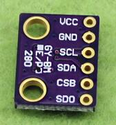
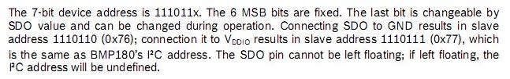
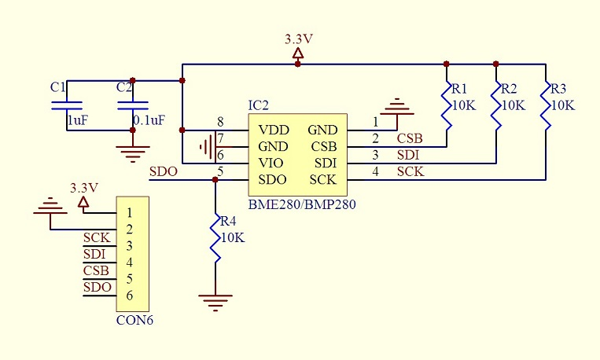
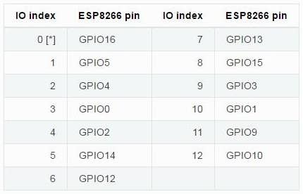

最近需要使用BMP280采集气压数据，然后通过wifi传输到远程服务器上。BMP280如图：

它使用I2C与MCU通信，可以读取温度和气压信息。
本来打算使用比较保守的方案，就是通过arduino读取BMP280的数值，然后再使用AT指令控制ESP8266来发送数据。后来之所以选用NodeMCU，是因为NodeMCU相当于是一块有wifi芯片的CPU，其运算性能很强大，只用来发送数据未免太浪费资源，而且还可以使用Lua编程（虽然这个一开始是一个坎）。
NodeMCU最新的固件是内置BMP280的函数库的，是用C语言写的，直接在Lua中调用即可，不过需要1.0以上版本的固件。而我用Cloud Build的编译服务编译出来的固件在我的ESP8266-01上运行不起来，不知道是什么原因，所以只能使用0.9.6版本的固件。而0.9.6版本的固件没有内置的BMP280函数库，又找了github，没有现成的库，所以只能自己用Lua封装一个。
Lua是一个与Javascript非常相似的语言，支持闭包函数，所以可以模仿“面向对象”的写法，做一个封装。
我封装的函数库如下：
bmp280.lua
--this file defines a constructor to create an object representing bmp280
--the constructor takes three paramaters:
-- sclPin: the scl pin,default is 4 if not assigned
-- sdaPin: the sda pin,default is 3 if not assigned
-- devAddr: the i2c device address of bmp280,usually 0x76 or 0x77,default is 0x76 if not assigned
--the constructor returns an object if succeed,or 0 if no device found
--the object returned contains following methods:
-- readTemperature(): read the temperature in 'C
-- readPressure(): read the pressure in Pa
-- readAltitude(seaLevelPa): read the altitude from the seal level when the pressure at sea level is given
-- seaLevelPa default is 102000 if not assigned
--create an object representing bmp280
function newBmp280(sclPin,sdaPin,devAddr)
local bmp280={}
sclPin=sclPin or 4
sdaPin=sdaPin or 3
devAddr=devAddr or 0x76
--coefficients
local digT1,digT2,digT3
local digP1,digP2, digP3,digP4,digP5,digP6,digP7,digP8,digP9
local tFine
--a private function to read registers
function readRegisters(start,length)
i2c.start(0)
i2c.address(0,devAddr,i2c.TRANSMITTER)
i2c.write(0,start)
i2c.start(0)
i2c.address(0,devAddr,i2c.RECEIVER)
local buffer=i2c.read(0,length)
i2c.stop(0)
local data={}
for i=1,length do
data[i]=string.byte(string.sub(buffer,i,i))
end
return data
end
--a private function to read an unsigned byte
function readU8(regAddr)
local data=readRegisters(regAddr,1)
return data[1]
end
--a private function to read an unsigned short (little endian)
function readU16LE(regAddr)
local data=readRegisters(regAddr,2)
return data[2]*256+data[1]
end
--a private function to read a signed short (little endian)
function readS16LE(regAddr)
local value=readU16LE(regAddr)
if value>32767 then
value=value-65536
end
return value
end
--a private function to read a unsigned 3-byte integer
function readU24(regAddr)
local data=readRegisters(regAddr,3)
return data[1]*65536+data[2]*256+data[3]
end
--a private function to write a byte
function writeU8(regAddr,value)
i2c.start(0)
i2c.address(0,devAddr,i2c.TRANSMITTER)
i2c.write(0,regAddr)
i2c.write(0,value)
i2c.stop(0)
end
--a private function to read coefficients
function readCoefficients()
digT1=readU16LE(0x88)
digT2=readS16LE(0x8A)
digT3=readS16LE(0x8C)
digP1=readU16LE(0x8E)
digP2=readS16LE(0x90)
digP3=readS16LE(0x92)
digP4=readS16LE(0x94)
digP5=readS16LE(0x96)
digP6=readS16LE(0x98)
digP7=readS16LE(0x9A)
digP8=readS16LE(0x9C)
digP9=readS16LE(0x9E)
end
--a public function to read temperature
function bmp280.readTemperature()
local adcT=readU24(0xFA)/ 16
local var1=(adcT/ 16384-digT1/ 1024)*digT2
local var2=adcT/ 131072-digT1/ 8192
var2=var2*var2*digT3
tFine=var1+var2
return tFine/ 5120
end
--a public function to read pressure
function bmp280.readPressure()
--must be done first to get the fine variable set up
bmp280.readTemperature()
local adcP=readU24(0xF7)/ 16
local var1=tFine/ 2-64000
local var2=var1*(var1*digP6/ 32768)
var2=var2+var1*digP5*2
var2=var2/ 4+digP4*65536
var1=(digP3*var1/ 524288+digP2)*var1 / 524288
var1=(1+var1/ 32768)*digP1
local p=1048576-adcP
p=(p-var2/ 4096)*6250/ var1
var1=digP9*p*p/ 2147483648
var2=digP8*p/ 32768
p=p+(var1+var2+digP7)/ 4
return p
end
--a public function to read altitude when pressure at sea level is given
function bmp280.readAltitude(seaLevelPa)
seaLevelPa=seaLevelPa or 102000
local pressure=bmp280.readPressure()
local altitude=44306*(1.0-math.pow(pressure/ seaLevelPa,0.1904));
return altitude
end
i2c.setup(0,sdaPin,sclPin,i2c.SLOW)
--check chip id
if(readU8(0xD0)~=0x58) then
return 0
end
readCoefficients()
--config control register
writeU8(0xF4,0x3F)
return bmp280
end
BMP280的i2c硬件地址要么是0x76，要么是0x77，这个由SDO引脚决定，可以参考手册BST-BMP280-DS001-11.pdf中的原文：

而我买的这个模块的引脚电路如图：

SDO被硬件拉低，所以i2c地址就是0x76。
代码看起来很长，但真正与硬件打交道的代码并不多，主要都是在进行数值计算。BMP280的使用流程其实很简单：
（1）读取0xD0位置的值，如果能读到0x58，那么说明是BMP280，确认硬件正常。
（2）读取从0x88开始的24个字节，每两个字节构成一个16位整数，高位在后，构成digT1,digT2,digT3这3个与温度相关的修正值和digP1,digP2, digP3,digP4,digP5,digP6,digP7,digP8,digP9这9个和气压相关的修正值。注意digT1和digP1是无符号的，其他都是有符号的。
（3）之后往0xF4里面写入0x3F，命令BMP280开始采样。
（4）读取温度时，从0xFA位置读取3字节，构成一个24位整数，高位在前，这个数就是温度寄存器的值。这个数需要进行一系列运算得到温度值，见readTemperature()的实现。readTemperature()的副产品是tFine，这个值在计算气压时需要用到，所以保存为对象的成员变量。
（5）读取气压时，从0xF7位置读取3字节，构成一个24位整数，高位在前，这个数就是气压寄存器的值。这个数需要进行一系列运算得到温度值，见readPressure()的实现。为了确保在计算气压值之前，tFine已经被更新到最新值，所以需要先执行一下readTemperature()。
（6）计算海拔的话，可以使用近地大气的气压公式：
altitude=44306*(1.0-math.pow(pressure/ seaLevelPa,0.1904));
使用这个库就非常简单了，我给一个demo：
require "bmp280" bmp280=newBmp280(4,3,0x76) tmr.delay(100000) print(bmp280.readTemperature(),bmp280.readPressure(),bmp280.readAltitude(102000))
这个demo中，i2c的引脚SCL引脚是GPIO4，SDA引脚是GPIO3，BMP280的i2c地址是0x76。之所以要延迟100ms，是为了让BMP280有充分时间进行内部初始化（否则读出来的数据是乱的）。需要注意的是，这里说的GPIO<n>是NodeMCU的GPIO标号，而不是ESP8266的GPIO编号，这两个之间的映射关系如下图：
